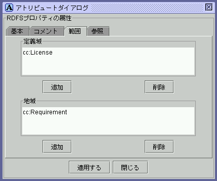

図11: プロパティエディタ

図12: アトリビュートダイアログ
(RDFSプロパティ:範囲タブ)
(RDFSプロパティ:範囲タブ)

図13: 範囲選択ダイアログ
プロパティエディタ内のRDFSプロパティを選択すると，RDFSプロパティの属性 がアトリビュートダイアログに表示される．RDFSプロパティを編集する際には， アトリビュートダイアログは，基本タブ，コメントタブ，範囲タブ，参照タブ が表示される．基本タブ，コメントタブの編集項目は，RDFS クラスと同様で ある．参照タブには，選択したRDFS プロパティのスーパープロパティと，そ のRDFSプロパティを有するRDF リソースのリストが表示される．リスト中の項 目をクリックした際の動作は，RDFSクラスの場合と同様である．範囲タブでは， RDFS プロパティのdomain とrangeをクラスエディタから選択できる．